2026-09-08T02:02:56+00:00
155 Martin St
A well-maintained single-family residential property with light green siding, an enclosed front porch, and manicured flower beds.
No open-data match yet
Open entry
Syracuse Property Atlas
A slow, sourced field notebook for city properties: parcel data, Street View, AI image observations, city open-data matches, tract context, and OpenStreetMap features.
Atlas map
Orange points are published entries. Gray points are parcels still waiting in the queue. Select a point to open the property popup.
Published properties
Each entry is generated by the hourly pipeline. AI notes are treated as field observations, not official code findings.
2026-09-08T02:02:56+00:00
A well-maintained single-family residential property with light green siding, an enclosed front porch, and manicured flower beds.

2026-09-08T01:16:16+00:00
The property is a well-maintained single-family home with intact siding, a clean roof, and a front entry ramp surrounded by neat landscaping.

2026-09-04T00:16:47+00:00
A two-story residential building with light-colored siding, an enclosed front porch, and a maintained front lawn, showing no obvious exterior defects.

2026-09-03T17:03:12+00:00
A residential property with a well-maintained lawn and garden beds, partially obscured by a large mature tree in the foreground.

2026-08-21T06:50:22+00:00
A well-maintained one-and-a-half-story single-family home with white siding, a covered front porch, and neat landscaping.

2026-08-20T07:16:47+00:00
The property at 181 Martin St is a white single-family home with a front porch, showing a well-maintained lawn and intact siding and windows.

2026-08-19T08:52:14+00:00
The image shows a well-maintained residential property with light blue siding, an attached garage, and a manicured lawn with trimmed shrubs.

2026-08-19T00:31:32+00:00
A single-family residential property with gray siding, a paved driveway, and a wooden fence, appearing in generally well-maintained condition.

2026-08-18T23:52:59+00:00
A well-maintained single-family home with light-colored siding, an enclosed front porch, and a manicured lawn.
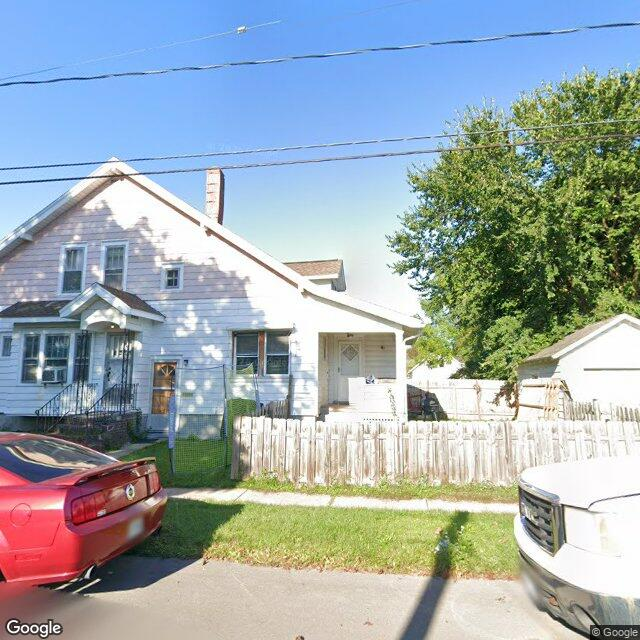
2026-08-17T19:03:02+00:00
{ "summary": "A two-story residential building with light-colored siding, a wooden fence, and a maintained lawn, partially obscured by vehicles in the foreground.", "property_type_guess": "two_family", "visible_conditions": [ "Light-colored siding appears intact with minor weathering.", "Windows and doors appear intact and functional from this angle.", "A wooden picket fence runs along the front yard and appears weathered but standing.", "The lawn is mowed and maintained." ], "condition_scores": { "roof": "fair", "siding_or_facade": "fair", "windows_doors": "good", "porch_or_entry": "fair", "yard_or_lot": "good", "trash_debris": "none_visible", "vegetation_overgrowth": "none_visible" }, "visible_flags": { "boarded_windows_or_doors": "no", "fire_damage_visible": "no", "structural_damage_visible": "no", "vacancy_signs_visible": "no", "active_construction_visible": "no" }, "possible_unrecorded_issues": [], "image_annotations": [], "needs_human_review": "false", "confidence": "high", "caveats": [ "Vehicles in the foreground partially obstruct the lower portion of the property and yard." ]
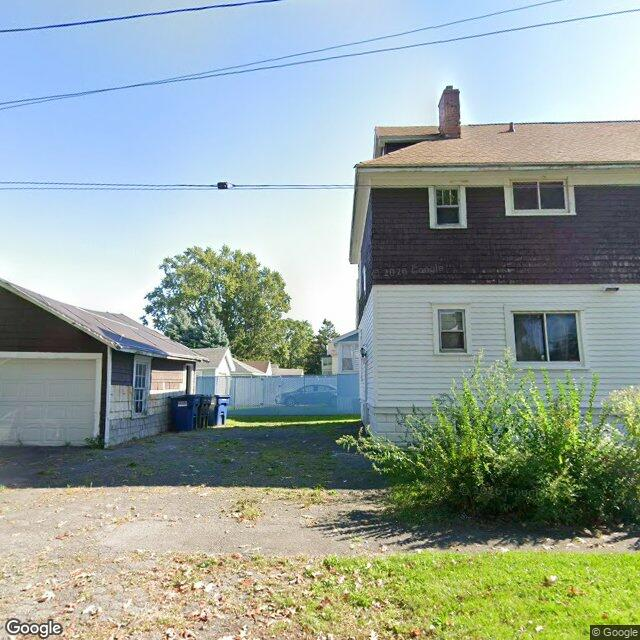
2026-08-17T18:10:35+00:00
The image shows the side profiles of a two-story residential structure and a detached garage with weathered siding and a paved driveway area between them.
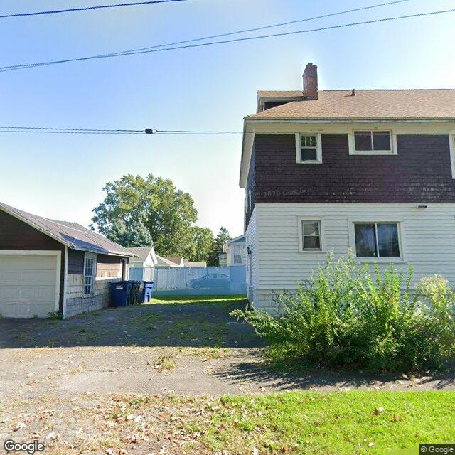
2026-08-17T11:47:04+00:00
A two-story residential structure with a detached garage, showing weathered siding on the garage and minor weed growth in the paved driveway cracks.
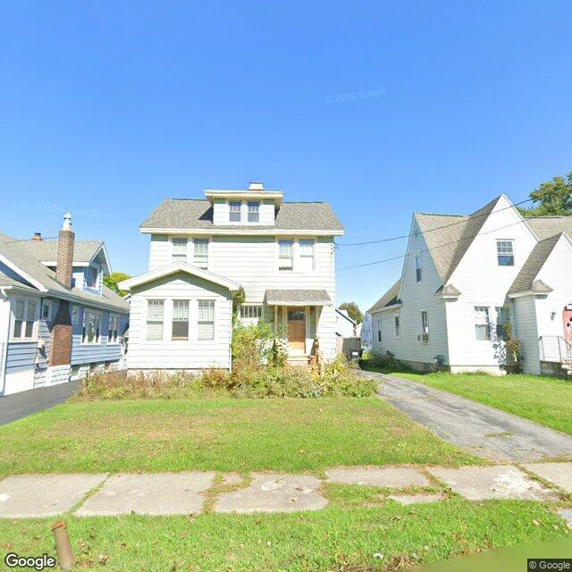
2026-08-17T11:41:24+00:00
A two-story residential building with light-colored siding, a front sunroom addition, and a mowed front lawn with a dense, unmanaged planting bed.
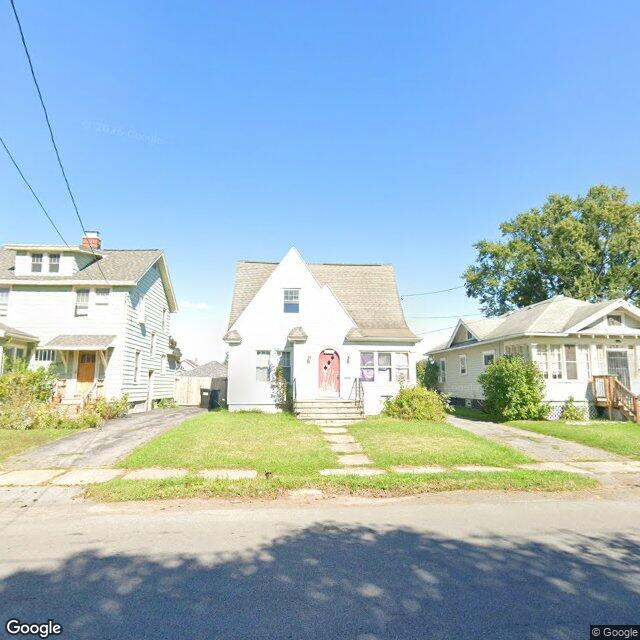
2026-08-17T07:05:14+00:00
A one-and-a-half-story single-family home with white siding, a red front door, and a well-maintained lawn, showing no obvious exterior signs of deterioration.
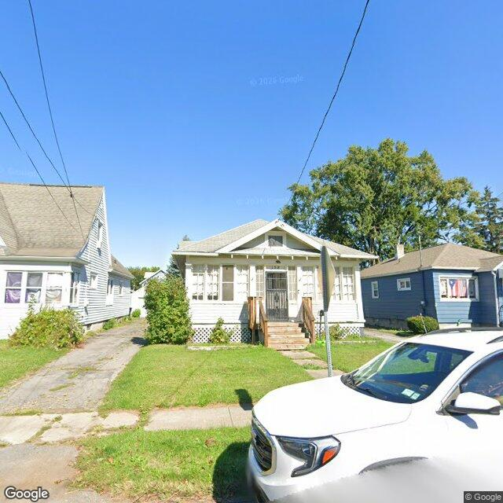
2026-08-16T23:02:56+00:00
A single-story residential bungalow with an enclosed front porch and a maintained lawn, showing no major visible exterior defects.
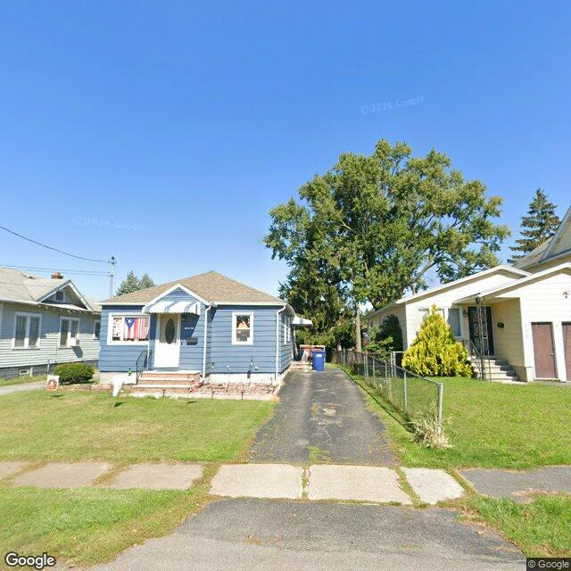
2026-08-16T22:11:30+00:00
A single-story residential building with blue siding, a shingled roof, and a paved driveway, appearing in generally fair to good condition with a maintained lawn.
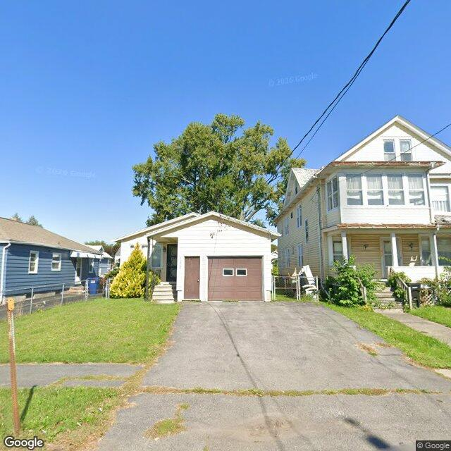
2026-08-16T20:03:14+00:00
The property features a single-story white residential structure with an attached front-facing garage, a paved driveway, and a maintained lawn.
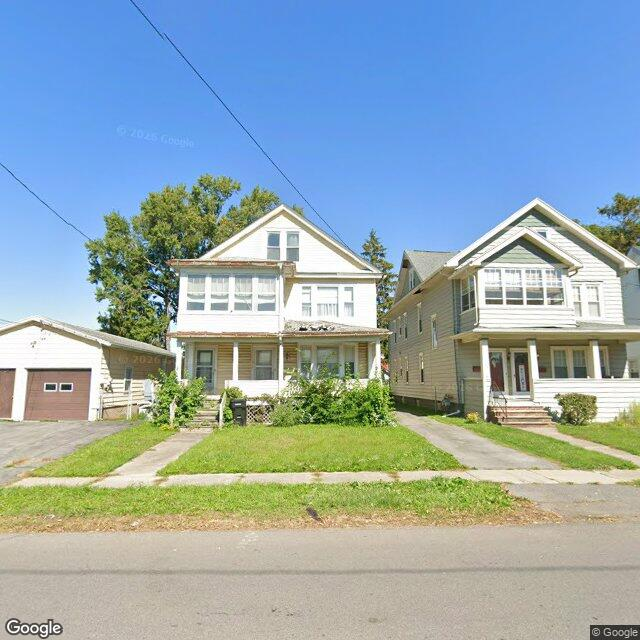
2026-08-16T19:03:02+00:00
The image displays a two-story residential structure with a detached garage, featuring a front porch that shows signs of deterioration.
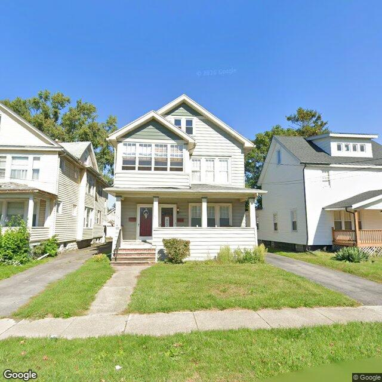
2026-08-16T18:03:02+00:00
The property is a well-maintained two-story residential building with a front porch, intact siding, and a neat lawn.
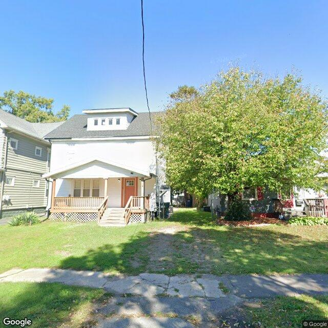
2026-08-16T17:03:01+00:00
{ "summary": "The property features a two-story residential structure with a white exterior, a dark roof, and a front porch, situated on a lot with a green lawn and a large tree.", "property_type_guess": "single_family", "visible_conditions": [ "A two-story residential structure with a white exterior finish.", "A dark-colored gabled roof with a dormer featuring multiple small windows.", "A front porch with a gabled roof, wooden railings, and steps leading to an orange-red front door.", "Windows are visible on the front porch and within the dormer.", "The property includes a green lawn, though some areas appear to have thinner grass or bare soil.", "A large deciduous tree with green foliage is situated on the right side of the property, partially obscuring the view of an adjacent structure.", "Utility lines are visible in the upper portion of the image." ве}, "condition_scores": { "roof": "good", "siding_or_facade": "fair", "windows_doors": "good", "porch_or_entry": "fair", "yard_or_lot": "fair", "trash_debris": "none_visible", "vegetation_overgrowth": "none_visible" }, "visible_flags": { "boarded_windows_or_doors": "no", "fire_damage_visible": "no", "structural_damage_visible": "no", "vacancy_signs_visible": "no", "active_construction_visible": "no" }, "possible_unrecorded_issues": [ "Minor wear or discoloration may be present on the white exterior siding.", "Some bare patches are visible within the lawn area." ], "image_annotations": [], "needs_human_review": "false", "confidence": "high", "caveats": [] }
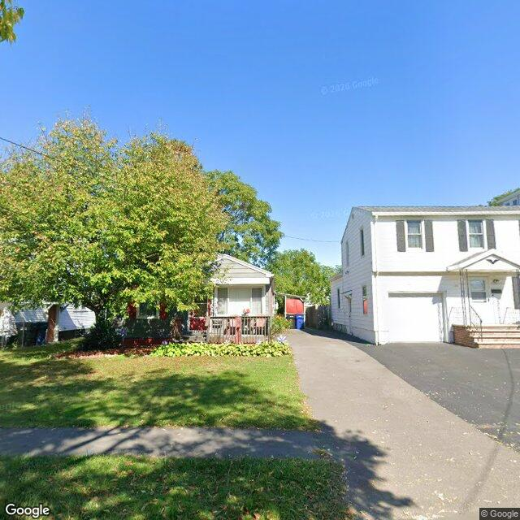
2026-08-16T16:03:04+00:00
{ "summary": "A street-level view showing a small single-story residential structure partially obscured by a tree, alongside a two-story residential building with a paved driveway.", "property_type_guess": "unclear", "visible_conditions": [ "A large tree partially obstructs the view of the single-story structure on the left.", "The single-story structure features a small front porch with a railing.", "The two-story structure on the right has white siding, a garage, and concrete steps leading to the entrance.", "The lawn appears mowed and maintained, with a garden bed in front of the smaller structure.", "A paved driveway runs between the structures." ], "condition_scores": { "roof": "unclear", "siding_or_facade": "good", "windows_doors": "good", "porch_or_entry": "good", "yard_or_lot": "good", "trash_debris": "none_visible", "vegetation_overgrowth": "none_visible" }, "visible_flags": { "boarded_windows_or_doors": "no", "fire_damage_visible": "no", "structural_damage_visible": "no", "vacancy_signs_visible": "no", "active_construction_visible": "no" }, "possible_unrecorded_issues": [], "image_annotations": [], "needs_human_review": false, "confidence": "medium", "caveats": [ "Multiple structures are visible in the image, making it unclear which specific building corresponds to 132 SEVENTH NORTH ST.", "A large tree partially obstructs the facade of the single-story structure on the left." ] } }
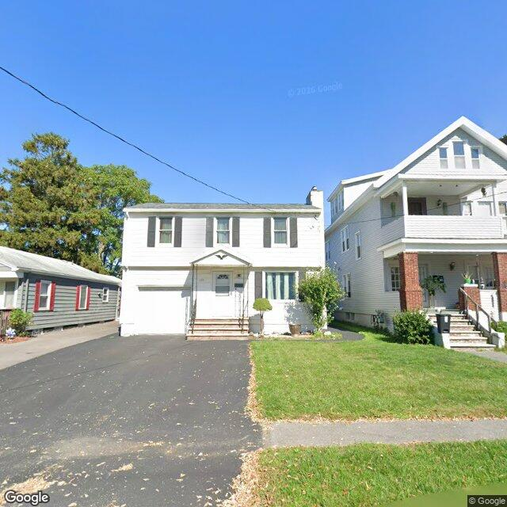
2026-08-16T15:03:13+00:00
A two-story single-family home with white siding, an attached garage, a paved driveway, and a well-maintained front lawn.
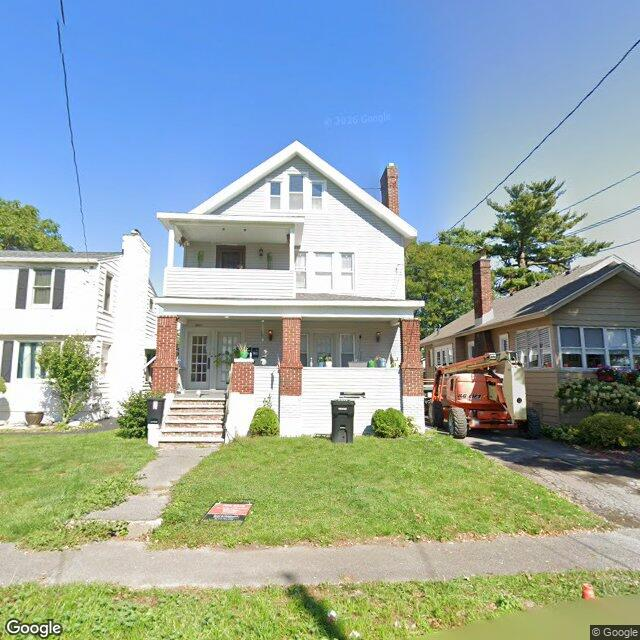
2026-08-16T14:44:36+00:00
A two-story residential duplex with a front porch and upper balcony, featuring a maintained lawn and showing no obvious exterior structural issues.
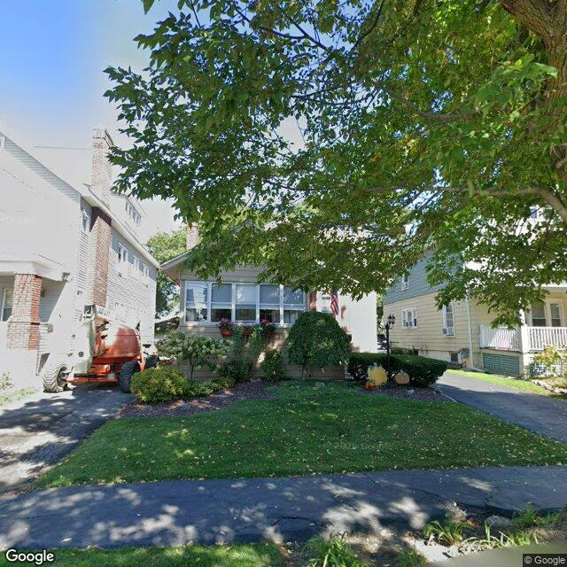
2026-08-16T08:26:40+00:00
A single-family residential property with a well-maintained front yard, partially obscured by a large foreground tree.
Method
The database starts with Syracuse parcels and enriches each selected property with vacant, rental registry, code violation, and unfit-property feeds. Census geocoding adds tract-level ACS context, OpenStreetMap adds nearby mapped features, and optional image analysis adds a visible-condition read when a free or paid image source is configured.